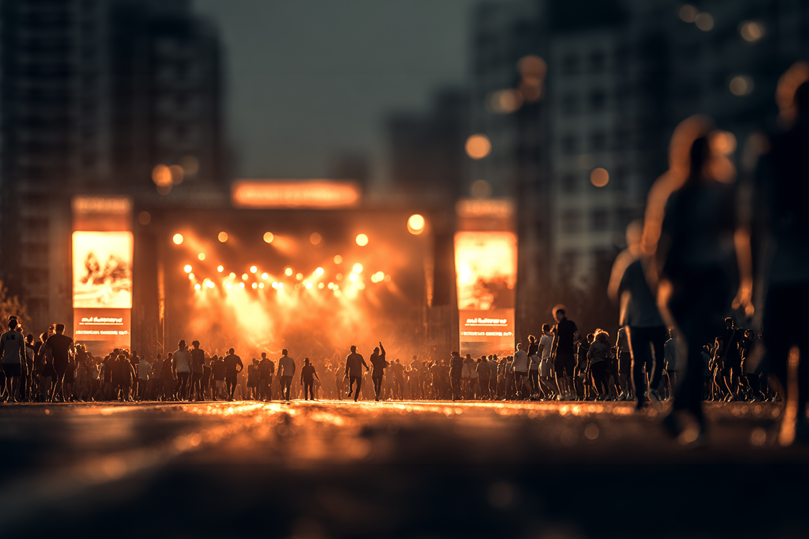
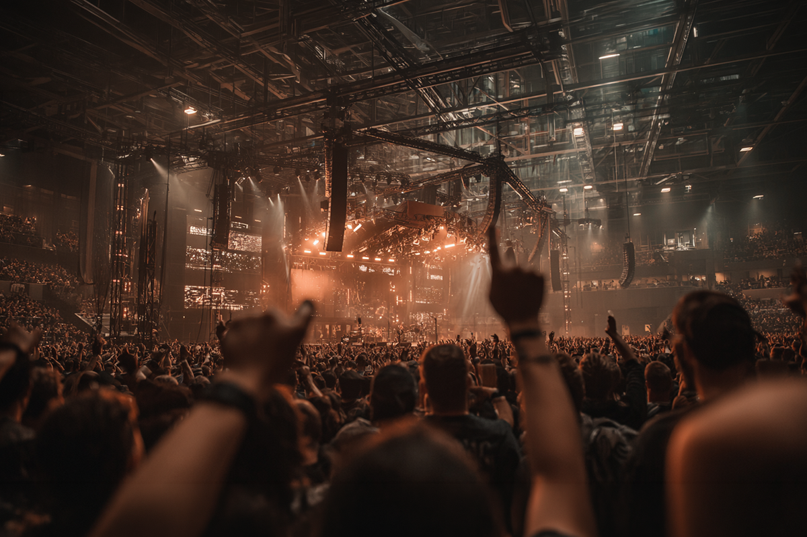
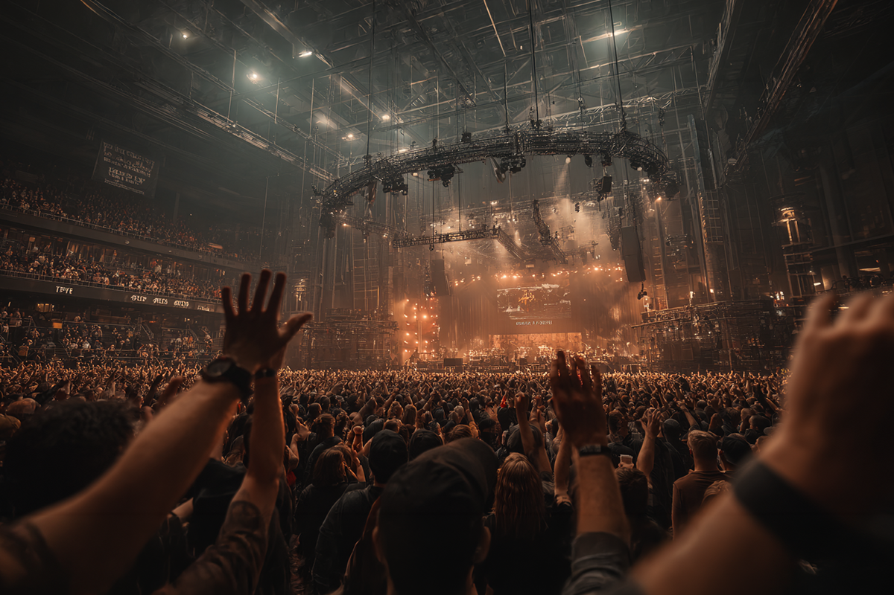

Algunos de los conciertos imperdibles de este 2026
Parte 1
Parte 1

Estamos en marzo, notoriamente uno de los meses más fuertes si hablamos de shows en vivo en Latinoamérica, y Chile no está lejos de ser la excepción ¿Exagero? Para nada.
Estrenamos el mes de marzo con el festival Lollapalooza y sus respectivos sideshows (9, para ser exactos, incluyendo nombres importantes en la escena como DJO, Interpol, Men I Trust y TV Girl), AC/DC agendó dos estadios nacionales, el brasileño Gilberto Gil volvió al Movistar Arena, al igual que Bryan Adams con su tour “Roll With the Punches”, y estos son solo algunos ejemplos.
Ahora que ya calentamos los motores para este primer trimestre del año, bueno sería darle un vistazo a los grandes conciertos que se vienen en lo mucho que queda de este 2026. Aunque, como son muchos eventos, bueno es separarlos ¿Empezamos con la primera parte?

Roxette es uno de los nombres más relevantes en el lineup 2026. Los clásicos ochenteros vuelven al Movistar Arena el próximo 21 de abril con un espectáculo que promete revivir las canciones que fueron platino en la playlist de nuestros papás.
La nueva agrupación, compuesta ahora por Per Gessle y Lena Philipsson, regresa a Chile con la gira titulada “Back Again!” Y todavía puedes comprar tickets por PuntoTicket.
Abril también tiene espacio para el metal progresivo de la mano de Dream Theater quienes regresan al país con su tour que marca el aniversario de sus 40 años de trayectoria bajo el título de Parasomnia 2026. El lugar escogido también fue el Movistar Arena y este concierto, que promete estar imperdible, se llevará a cabo el próximo 22 de abril. Cabe destacar que este show será para conmemorar el álbum Parasomnia y también para celebrar los 30 años del lanzamiento de su EP A Change of Seasons. Puedes buscar más información sobre las entradas por acá.
Ese mes también marcará el regreso a nuestros escenarios del cantautor uruguayo Jorge Drexler, quien llegará con su Tour 2026, incluyendo dos conciertos que también se realizarán en el Movistar Arena los días 25 y 26.
Este mes también hay espacio para el pop de la mano del multifacético Jackson Wang. El reconocido artista hongkonés vuelve en solitario a nuestro país el próximo 28 de abril con la segunda parte de su aclamado “Magic Man 2 World Tour”. La primera parte de este tour recorrió 24 ciudades y cuatro continentes, marcando una fuerte presencia en el mercado musical global. Ojo amigos, que todavía pueden encontrar algunas localidades disponibles.

El gran puntapié inicial para mayo lo dan los históricos Megadeth, quienes agendaron dos conciertos en el Movistar Arena para el 4 y 5 de mayo con su tour “This Was Our Life 2026”, el que sería su adiós definitivo a los escenarios después de más de 40 años de una exitosa trayectoria. La idea, claramente, es que nadie se quede fuera. Así que aquí te acortamos el camino y te compartimos el link para darle una vuelta a las localidades disponibles.
Siguiendo la tónica del metal, Korn es uno de los platos fuertes en todo lo que va de las confirmaciones de conciertos. La banda insigne del Nü Metal no ha pisado Chile en casi diez años, así que es normal que los fans estén expectantes a lo que ocurra este 8 de mayo en el Parque Estadio Nacional. Esta vez lo harán con los grupos Spiritbox y Seven Hours After Violet, así que toca afirmarse. Todavía quedan poquitas entradas, así que recomiendo ir guardando un puesto para este prometedor evento.
Jonas Brothers también agendó dos conciertos en el Movistar Arena para los días 10 y 11 de mayo. El popular trío de hermanos predilectos de Disney vuelve al país con una gran dosis de nostalgia, reviviendo sus mejores éxitos junto a quienes vibraron con su sonido en los tiempos dorados del canal de Mickey Mouse.
Ahora, no podemos dejar de mencionar la electrónica de Martin Garrix. El DJ neerlandés se presentará en el Movistar Arena el 15 de mayo con su “Americas Tour”. Si vibras con este estilo, esta podría ser la oportunidad de ver en vivo a uno de los DJs más populares del momento. Quedan muy pocas entradas, y las puedes conseguir en el siguiente link.
Ya cerrando este mes, dos grandes de la música latinoamericana: Mon Laferte y Natalia Lafourcade también pisarán el escenario del Movistar Arena. Con sus respectivas giras, ambas artistas visitarán el país durante este mes: Mon con su “Femme Fatale Tour 2026”, el 14 y el 19 de mayo; y Lafourcade con su “Cancionera Tour”, el 21 en Santiago y el 23 en Frutillar.
“Poderoso y cargado de identidad”, el concierto de Mon Laferte promete ser inolvidable para sus fans. Por otro lado, lo de la mexicana Natalia Lafourcade contempla a Chile en dos de sus 65 fechas, que la llevarán por Latinoamérica y Norteamérica.
Junio empieza potente con un poquito de k-pop. Yves se presentará en el Teatro Coliseo el 4 de ese mes con su gira “The Americas”, en un show que presenta a la cantante en una nueva faceta, mucho más experimentada y con un éxito que comienza a verse de a poco en el mercado musical global.
Diez conciertos. DIEZ son los que tiene contemplados el guatemalteco Ricardo Arjona en el Movistar Arena. Las fechas para sus múltiples shows en el contexto de su gira “Lo que el Seco no Dijo” son los días 5, 7, 9, 12, 13, 14, 16, 18, 19 y 20 de junio. Es que uno de los artistas latinos más queridos y escuchados en Latinoamérica no podía hacer menos que contemplar una decena de conciertos que, sin duda, continúan demostrando el éxito de su trayectoria. Para más información sobre los shows que continúan disponibles, puedes darle un vistazo al sitio web del Movistar Arena.
Finalmente, uno de los conciertos más esperados para ese mes, también en el Movistar Arena, es el de Pulp, uno de los grupos insignes del britpop de los 90’s. La banda, liderada por Jarvis Cocker, pisará territorio nacional el próximo 8 de junio presentando su nuevo disco “More”, el primero en casi 25 años, y también muchas de las joyas que hicieron bailar a una generación completa.
Estamos a la espera de que se sigan confirmando artistas para este mes, así que atentos a las partes que siguen.
Por lo pronto, como muchos de estos shows se realizan en el Movistar Arena, te recomendamos darle un vistazo a su cartelera en el siguiente enlace.
 Cultura
CulturaSé que suena raro hablar de calor extremo mientras en Chile todos están buscando la parka más gruesa del clóset.
 Cultura
CulturaEl hecho de que estemos entrando al mes de julio no se puede creer. Pero lo que tampoco se puede creer es la cantidad de artistas que han…
 Cultura
CulturaCuando hablamos de trabajos clásicos de la música chilena, siempre se nombran los discos de Violeta Parra, Víctor Jara, Los Jaivas o…